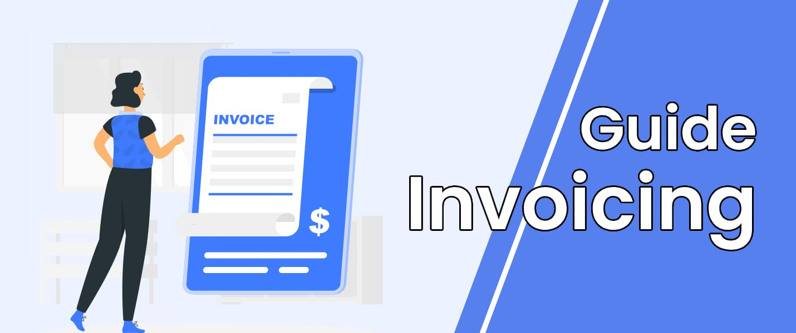

<div class="container">
    <div class="card">
        <div class="bg" style="background-color: #4766b8;">
            
        </div>
        <h1 class="display-3">Invoice Guide</h1>
        <hr class="my-3 my-md-5">

        <h2>What is an Invoice?</h2>
        <p>
            An invoice is a document that itemizes and records a transaction between a buyer and a seller. It typically
            includes information such as the products or services sold, the quantity and price, any applicable taxes,
            and the total amount due.
        </p>

        <h2>When Do You Need an Invoice?</h2>
        <p>
            Invoices are used in a variety of business transactions, including sales of goods or services, rent, and
            consulting fees. You should create an invoice whenever you provide a product or service to a customer and
            expect to be paid for it.
        </p>

        <h2>How to Create an Invoice with EasyInvoice</h2>
        <p>
            Creating an invoice with EasyInvoice is simple and straightforward. Here are the steps:
        </p>
        <ol>
            <li>Go to the EasyInvoice website and click on "Create Invoice"</li>
            <li>Enter your business details, including your name, address, and logo (optional)</li>
            <li>Enter your customer's details, including their name, address, and any purchase order number (if
                applicable)</li>
            <li>Add the items or services you are selling, including the quantity, price, and any applicable taxes</li>
            <li>Preview the invoice to make sure all the information is correct</li>
            <li>Download or email the invoice to your customer</li>
        </ol>

        <h2>Invoice Best Practices</h2>
        <p>
            Here are some best practices to keep in mind when creating an invoice:
        </p>
        <ol>
            <li>Be clear and concise in your language</li>
            <li>Make sure all the information is accurate and up-to-date</li>
            <li>Use a consistent format for all your invoices</li>
            <li>Include a unique invoice number for easy tracking</li>
            <li>Specify the payment terms and due date</li>
            <li>Consider offering multiple payment options, such as credit card, PayPal, or bank transfer
                By following these best practices, you can create professional and accurate invoices that help you get
                paid on time.
            </li>
        </ol>
        <div class="row end">
            <a class="btn-white" [routerLink]="['/guide/getting-paid']">Getting Paid</a>
        </div>
    </div>
</div>